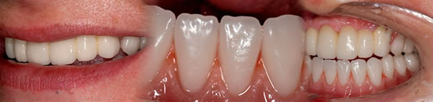
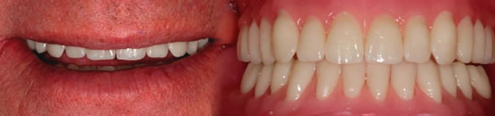

Lichfield Dentures - Gallery
If you would like dentures that look more like real teeth then call Dentures Direct to book your FREE consultation. Below are two of my satisfied patients with a summary of the work that has been carried out.
Patient 1
This patient was treated with 6 crowns on the upper front teeth, all the other teeth are on dentures, the lower denture is stabilised by implants, the clinical work was done by Dr R Doshi. Look at how the pink acrylic of the dentures has been colour toned to match the natural gums.

Patient 2
This patient was treated with a set of complete dentures, a natural looking smile was achieved, shown here at the trial stage, as with all my Premier and Ulti-Matt dentures, these will be finished with colour toned pink acrylic, the quality of the teeth used for this level of work means I can add colour toning to the teeth too, enabling truly natural aesthetics to be achieved.

 Matt your dentures are good, they’re not just good, they’re exceptional!
Matt your dentures are good, they’re not just good, they’re exceptional!
Dr R Doshi,
The Perfect Smile Studios, Dentist.
 Just a quick note to say thanks for the denture, it fits and looks a lot better than my old one, it’s even stopped the occasional lisp I had, it’s like having my original teeth back - many thanks
Just a quick note to say thanks for the denture, it fits and looks a lot better than my old one, it’s even stopped the occasional lisp I had, it’s like having my original teeth back - many thanks
Mr Stokes,
A Lichfield Denture Patient.